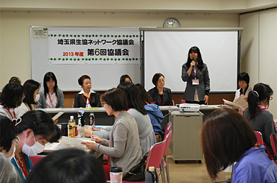
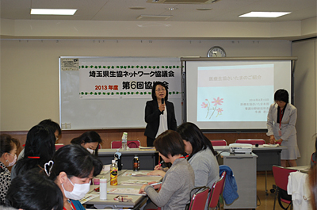
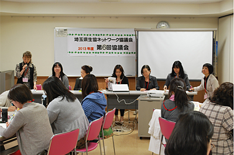
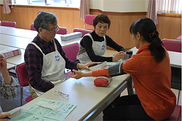
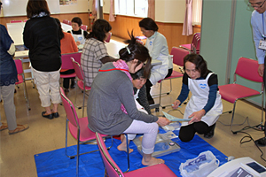

4月15日（火）、2013年度第6回目の協議会が、6生協と生協ネットワーク協議会、県生協連の26名が出席してさいたま市北区のコープみらい コーププラザ大宮で開かれました。
|  |
開会にあたって、滝澤玲子会長がこの一年間の協議会活動を振り返りながら挨拶し、はじめに医療生協さいたまの牛渡君江さん（医療生協さいたま 看護分野統括部長）を講師に、学習会『医療生協さいたまについて』を持ちました。
今年度6回の協議会をすすめてきましたが、年度当初、協議会メンバーのアンケートで、医療生協のことをもっと識りたいとの要望があり、開催となったものです。
1．学習会『医療生協さいたまについて』
講師：牛渡 君江さん（医療生協さいたま 看護分野統括部長）
|  |
講師の牛渡さんは、「医療生協さいたまのご紹介」として、医療生協が医療機関としてだけでなく、健康がくらしの問題と直結しており、健康とくらしの問題をくらしの専門家である地域住民と、医療と福祉の専門家が協同して問題解決し、健康と生活を守っていく組織であると述べ、受診者である組合員は、単なる受療者ではなく、あらゆる活動の主人公であると語りかけました。
医療生協さいたまは現在、埼玉県内に病院4、老健施設2、診療所8、歯科診療所2、介護事業所17を数える、組合員24万人の全国でも有数の医療生協ですが、その歩みは1945年、終戦後の「貧しい人々、病んだ人々のためにこそ医療を」との理念で大井村（現ふじみ野市）の農民の診療から始まり、今日まで「いのちの平等」を求めて真直ぐな人権意識を貫いて来たこと、基本理念として、人が人として大切にされる社会をめざし、様々な人たちとの協同で平和とくらしを守り、健康で笑顔あるまちをつくることであるとし、健康格差と社会格差として「自殺」「高齢者」「女性」「母子世帯」「子ども」「生活保護」「東日本大震災」など、今日直面する課題にふれながら、医療生協さいたまの取り組み、活動を紹介しました。
2．学習の後は、各生協より2014年度の活動など、それぞれから報告され、交流しました。
|  |
□さいたま住宅生協
年一回「住宅相談」をおこなっています。また、これまで利用した組合員へのアフターフォローの強化をすすめています。2月の大雪による被害では、70件超の被害を受けた組合員への対応をすすめています。
□生活協同組合コープみらい
コープみらいとなって二年目になりました。重点課題（商品、高齢者・子育て、環境）を基に活動しています。現在、「書き損じハガキ回収キャンペーン」（NPO法人ハンガー・フリー・ワールド）に取り組んでいます。
□さいたま高齢協
6月に第9回総代会を予定しています。4月から消費税が変わりました。高齢者に出来る限り対応していきたいと思います。「緊急ノート」を制作し、普及に取り組んでいます。
□パルシステム埼玉
機関誌「あすーる」4月号（パルシステム埼玉に期待すること、食と農の取り組み）をもとに、活動紹介いただきました。
□埼玉県勤労者生活協同組合
今年度の総代会の準備をすすめています。昨年から、ふくしまのひまわりプロジェクトに参加しました。今年も取り組んでいきます。
□医療生協さいたま生活協同組合
健康ウォークフェスタを5月に予定しています。6月の総代会に向けて、5月地区別総代会議を開催します。
3．生協ネットワーク協議会2013年度まとめ（案）と2014年度活動計画（案）について、滝澤会長より説明されました。協議会終了後、医療生協さいたま生活協同組合の協力で、健康チェック（血圧、血管年齢、骨密度等）をおこないました。
|  |  |
| 医療生協さいたまによる健康チェックの模様 | |